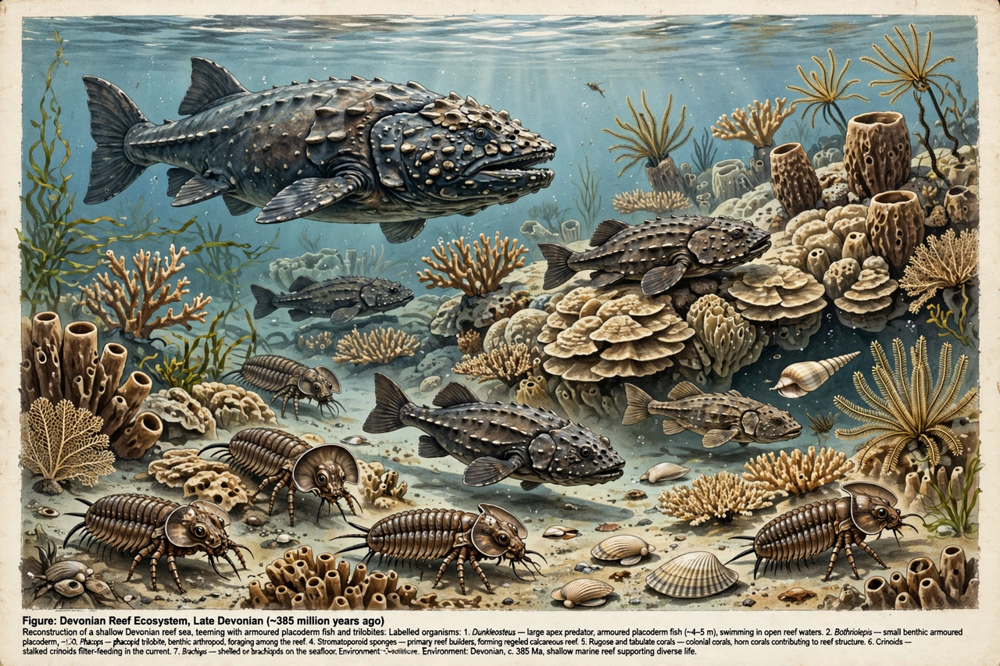

Devonian
From Wikipedia, the free encyclopedia

The Devonian is a geologic period of the Paleozoic Era, spanning 60.3 million years from the end of the Silurian (419.6 million years ago) to the beginning of the Carboniferous (358.9 Ma). Named for Devon, England, where its rocks were first studied, it is called the 'Age of Fishes' for the great diversification of fish — armoured placoderms, the first sharks, coelacanths and the lobe-finned ancestors of land vertebrates — while on land the first forests and seed plants transformed the continents.
Life
Devonian seas held reefs built by stromatoporoids and corals, ammonoids newly evolved, and apex predators like the placoderm Dunkleosteus. By the late Devonian, Tiktaalik (c. 375 Ma) and the first tetrapods (Acanthostega, Ichthyostega) bridged water and land. Vascular plants grew from centimetres to the 8-metre trunks of Archaeopteris forests, drawing down CO₂ and perhaps helping trigger the period's ending crisis.
Extinction
The Late Devonian extinction — a drawn-out series of pulses including the Kellwasser events (c. 372 Ma) — eliminated about three-quarters of marine species and all the great placoderms, ranking among the 'Big Five' mass extinctions. Causes debated include anoxia, climate swings from forest-driven weathering, and possibly a supernova — a hypothesis raised by isotope hints and still unproven.